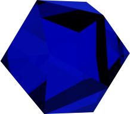

Sapphires are considered a protective gemstone. They may shield the wearer from physical harm as well as bad intentions and envy. It was also thought that sapphires had medicinal properties. Blue sapphires are considered a highly spiritual stone worn by priests. Lastly, sapphires are among the few gemstones that can exhibit natural asterism in the form of a six-rayed star.
